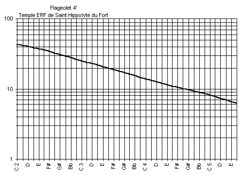

Saint-Hippolyte-du-Fort (Gard, FRANCE)
Grand Temple de l'Église Réformée
Clavier : |
Récit |
Jeu : |
Flageolet 4' |
[ Tailles du jeu ]
- À l'exception de la dernière octave, le jeu entier provient de
l'ancienne Flûte 4' que Beaucourt et Voegeli avaient posé
provisoirement au Grand Orgue. Mais la restauration de 1992 à permis
à Laurent PLET de déterminer que ce jeu devait être
posé au Récit, sachant - avec certitude - que les facteurs constructeurs
prévoyaient de poser un Flageolet au Récit de cet orgue.
(c.f. :
description du jeu de Flûte 4' du Grand-Orgue)
- Laurent PLET a seulement dû compléter la
dernière octave par des tuyaux neufs, à calotte mobile, jusqu'au plus petit.
- Aucun tuyau ne comporte de frein harmonique.
